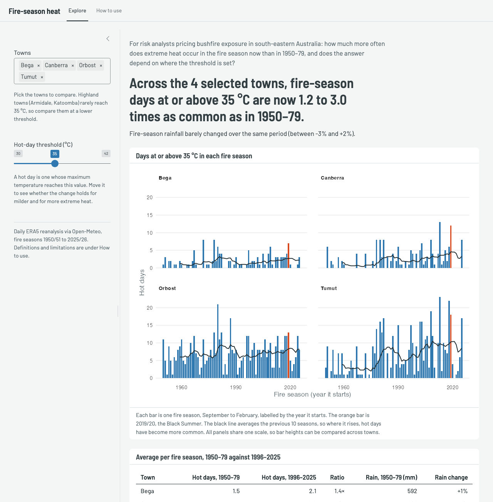
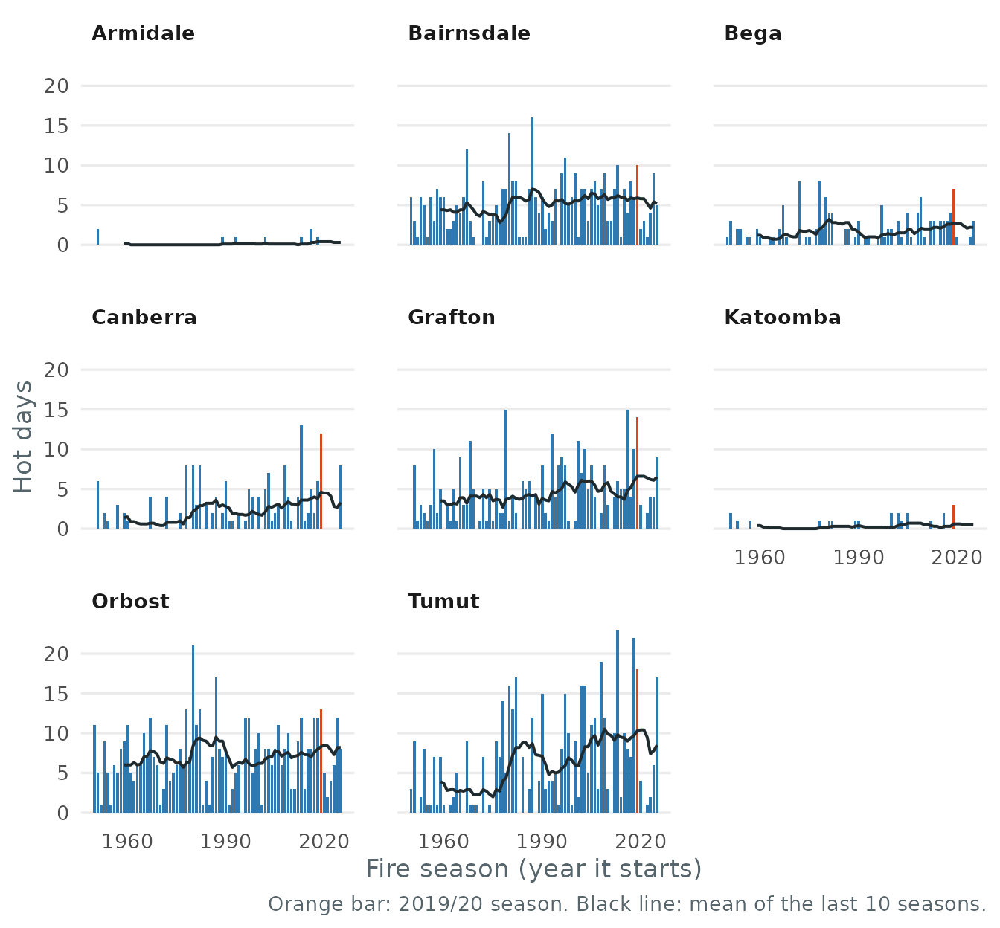

bushfireheat is for risk analysts who price bushfire exposure in south-eastern Australia. It answers one question: how much more often does extreme heat occur in the fire season now than in 1950–1979, and does the answer depend on where the threshold for “extreme” is set?
Install and load
# install.packages("remotes")
remotes::install_github("ETC5523-2026/etc5523-assignment-4-hanwen-l")Launch and use the app
run_app()
The app has two tabs. Explore is where you work, and How to use defines every term and lists the data’s limitations. On the Explore tab:
- Pick one or more towns in Towns.
- Set the Hot-day threshold. A hot day is a day whose maximum temperature reaches it.
- Read the headline. It answers the question for your selection: how many times as common days at or above the threshold are in 1996–2025 as in 1950–79, across the towns with enough data. The sentence below it compares rainfall over the same seasons.
- Read the chart and table for the detail behind the headline.
- Move the threshold up and down to see whether the answer depends on it.
Interpret the outputs
The headline. With the four towns in the screenshot at 35 °C, days that hot are now 1.2 to 3.0 times as common as in 1950–79. Inland towns show the largest rises (Canberra 3.0×, Tumut 2.6×) and Orbost the smallest (1.2×). Average fire-season rainfall changed by between -3% and +2%, so the extra heat has not come with drier seasons.
The chart. Each panel is one town and each bar one fire season, on a shared scale. The orange bar is 2019/20, the Black Summer, and the black line averages the previous 10 seasons. Where the line climbs after the 1990s, hot days have become more common; in Canberra and Tumut, 2019/20 is among the hottest seasons on record but not an outlier against recent years.
The table. It gives each town’s average hot days per season in both periods, their ratio and the change in rainfall.
What this means for the question. Loadings built on 1950–79 experience would understate how often these towns now see fire-season heat, and the change comes from heat rather than drought.
When a town is left out. A town needs at least 10 hot days in 1950–79 for its ratio to be stable. Highland towns rarely reach 35 °C, so if you add Armidale or Katoomba the headline leaves them out, names them, and the table shows a dash. Lower the threshold to about 32 °C to include them.
The data
fire_daily has one row per town and day, for every day
of every September–February fire season since 1950/51. A season is
labelled by the year it starts, so season == 2019 is the
2019/20 Black Summer.
fire_towns
#> # A tibble: 8 × 7
#> town state lat lon grid_lat grid_lon elevation
#> <chr> <chr> <dbl> <dbl> <dbl> <dbl> <dbl>
#> 1 Armidale NSW -30.5 152. -30.5 152. 985
#> 2 Bairnsdale VIC -37.8 148. -37.8 148. 2
#> 3 Bega NSW -36.7 150. -36.8 150. 11
#> 4 Canberra ACT -35.3 149. -35.2 149. 574
#> 5 Grafton NSW -29.7 153. -29.8 153 8
#> 6 Katoomba NSW -33.7 150. -33.8 150. 1019
#> 7 Orbost VIC -37.7 148. -37.8 148. 45
#> 8 Tumut NSW -35.3 148. -35.2 148. 272
head(fire_daily)
#> # A tibble: 6 × 5
#> town season date tmax rain
#> <chr> <int> <date> <dbl> <dbl>
#> 1 Armidale 1950 1950-09-01 18 0
#> 2 Armidale 1950 1950-09-02 13.3 0
#> 3 Armidale 1950 1950-09-03 9.4 0
#> 4 Armidale 1950 1950-09-04 12.3 0
#> 5 Armidale 1950 1950-09-05 15.1 0
#> 6 Armidale 1950 1950-09-06 16 0Use the functions directly
The app is built on three exported functions.
summarise_seasons() counts the days in each season that
reached the threshold, compare_periods() averages them over
the two periods, and plot_hot_days() draws the chart.
seasons <- summarise_seasons(fire_daily, threshold = 35)
compare_periods(seasons)
#> # A tibble: 8 × 8
#> town baseline_hot_days recent_hot_days ratio reliable baseline_total
#> <chr> <dbl> <dbl> <dbl> <lgl> <int>
#> 1 Armidale 0.0667 0.167 2.5 FALSE 2
#> 2 Bairnsdale 4.2 5.9 1.40 TRUE 126
#> 3 Bega 1.5 2.07 1.38 TRUE 45
#> 4 Canberra 1.1 3.27 2.97 TRUE 33
#> 5 Grafton 3.77 5.4 1.43 TRUE 113
#> 6 Katoomba 0.167 0.433 2.6 FALSE 5
#> 7 Orbost 6.6 7.77 1.18 TRUE 198
#> 8 Tumut 3.53 9.07 2.57 TRUE 106
#> # ℹ 2 more variables: baseline_rain <dbl>, recent_rain <dbl>
plot_hot_days(seasons)
A higher threshold gives a larger ratio, but from fewer days. When
the baseline has fewer than 10 hot days in total, reliable
is FALSE and the ratio should not be read on its own.
compare_periods(summarise_seasons(fire_daily, threshold = 38))
#> # A tibble: 8 × 8
#> town baseline_hot_days recent_hot_days ratio reliable baseline_total
#> <chr> <dbl> <dbl> <dbl> <lgl> <int>
#> 1 Armidale 0 0 NA FALSE 0
#> 2 Bairnsdale 1.23 2.4 1.95 TRUE 37
#> 3 Bega 0.1 0.4 4 FALSE 3
#> 4 Canberra 0.0667 0.267 4 FALSE 2
#> 5 Grafton 0.567 0.967 1.71 TRUE 17
#> 6 Katoomba 0 0 NA FALSE 0
#> 7 Orbost 2.17 3.17 1.46 TRUE 65
#> 8 Tumut 0.633 2.77 4.37 TRUE 19
#> # ℹ 2 more variables: baseline_rain <dbl>, recent_rain <dbl>